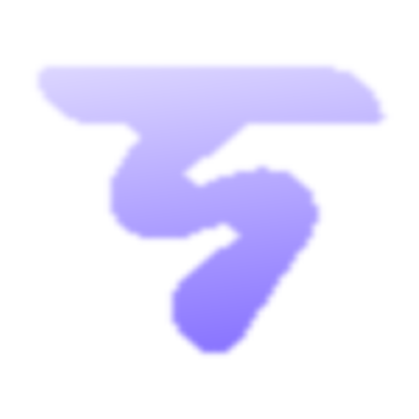

REPORT
Evidence, in one place.
Completed sessions will produce a clean audit surface with findings, journey context and captured evidence.
03Start a run ↗
No report generated yet.
Run a test from Command to generate the first report surface.

TRACECompleted sessions will produce a clean audit surface with findings, journey context and captured evidence.
Run a test from Command to generate the first report surface.